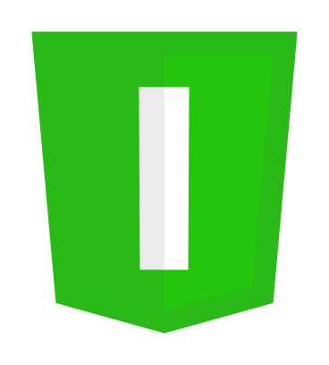

WebAssembly

 JavaScript
JavaScript
- Im Mai 1995 in nur 10 Tagen entwickelt
- Einzig weiträumig verfügbare Skriptsprache des Webs
- Ursprünglich für kleine Skripts gedacht
- Wird heutzutage für riesige Web Apps verwendet
Adobe Flash
- Browser Add-on zur Darstellung von interaktiven Inhalten
- Kann direkt in HTML integriert werden
- Vorallem zur Darstellung von Videos und Werbebannern etabliert
- Großes Sicherheitsrisiko, da Sandbox des Browsers umgangen wird
- Von vielen mobilen Plattformen nicht mehr unterstützt
asm.js
- JavaScript als Kompilierziel
- Ausgerichtet auf Sprachen mit manuellem Speichermanagement
- Strenge Teilmenge von JavaScript
function add(a, b) {
a = a | 0;
b = b | 0;
return (a + b) | 0;
}
- Bitweises Oder mit 0 als 32-Bit Integer Annotation
- Von älteren Browsern ignoriert
- Von modernen Browsern als Optimierung erkannt
function strlen(pointer) {
pointer = pointer | 0;
var current = 0;
current = pointer;
while (HEAP8[current] | 0 != 0) {
current = (current + 1) | 0;
}
return (current - pointer) | 0;
}
- Heap wird als Array von Bytes kodiert
- Zeiger stellen Indizes des Arrays dar
- Umgeht Garbage Collection der Virtual Machine
WebAssembly
- Seit 2015 in Entwicklung
- Unterstützt Apple, Microsoft, Google und Mozilla
- Byteformat auf Basis von asm.js
- Aufbauend auf JavaScript VM
Unterschiede zu JavaScript
- Schnelleres Parsen
- Multi Threading
- Typisierter Code
- Native Ganzzahltypen
- Manuelle Speicherverwaltung
| C++ | Bytes | Text |
|---|---|---|
|
|
|
Demos
/* Heron-Verfahren zur Berechnung der Quadratwurzel */
int a;
int xn;
int xn1;
read(a);
xn = 0;
xn1 = (a + 1) / 2;
while (xn =!= xn1)
{
xn = xn1;
xn1 = (xn + (a / xn)) / 2;
};
print(xn);
Compile your code to see a result!